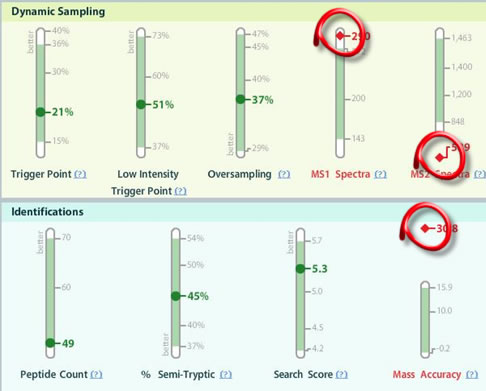
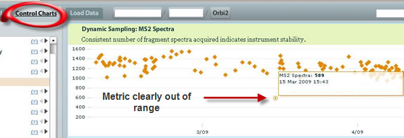
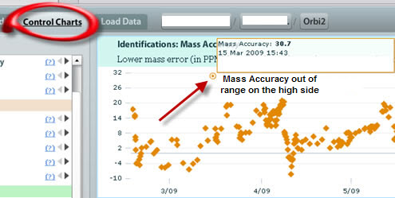

As we have seen here previously, often one metric being out of line can lead to the discovery that another is out of line. This is a powerful feature of MassQC: several metrics are correlated, and when looking only at the mass spectra, we are limited to what we see. The instrument could, in fact, be operating at less than optimal.
In the present case, the MassQC Dashboard clearly shows Dynamic Sampling issues, but also Mass Accuracy seems to be out of range:

Supporting evidence from the Control Charts :

What we notice here in addition to the Dynamic Sampling metrics being out of range is that the Mass Accuracy metric is clearly out of range compared to historical data:

Because of this high Mass Accuracy metric being out of range, this instrument should be closely examined after this red flag. Whatever the lab technician did at this point helped because the trend shows some stability in this metric.
If you have questions, comments and/or insights about MassQC , you can share them on the MassQC Users Forum .